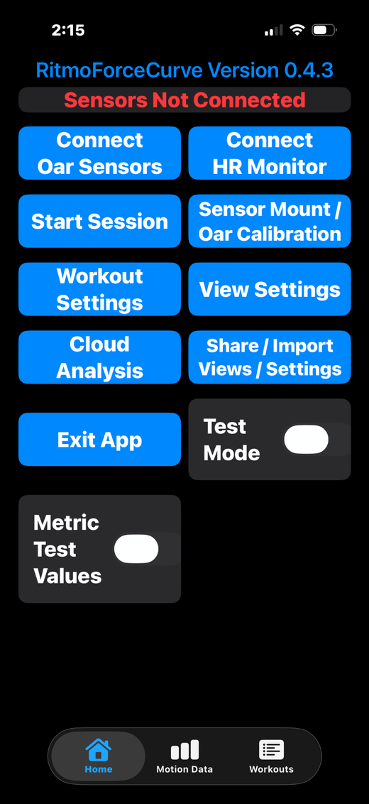
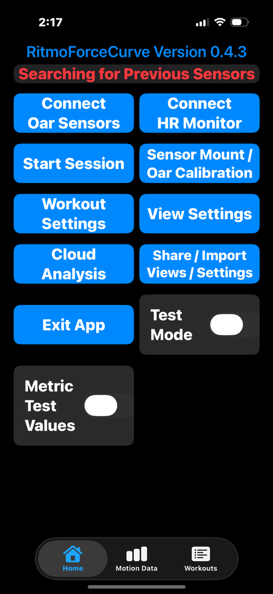
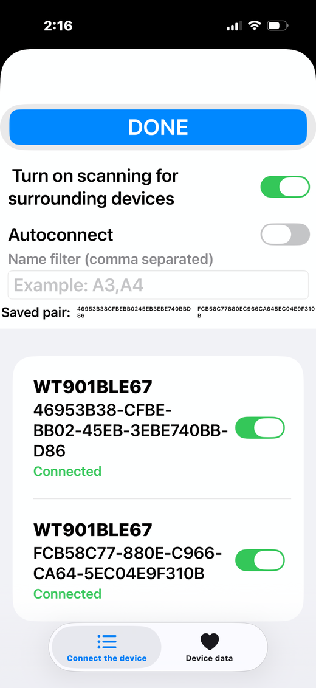
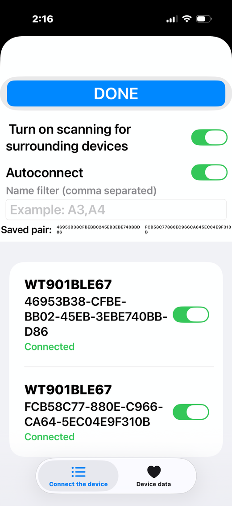
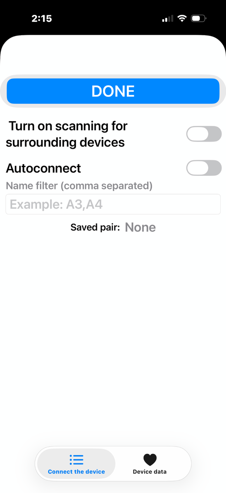
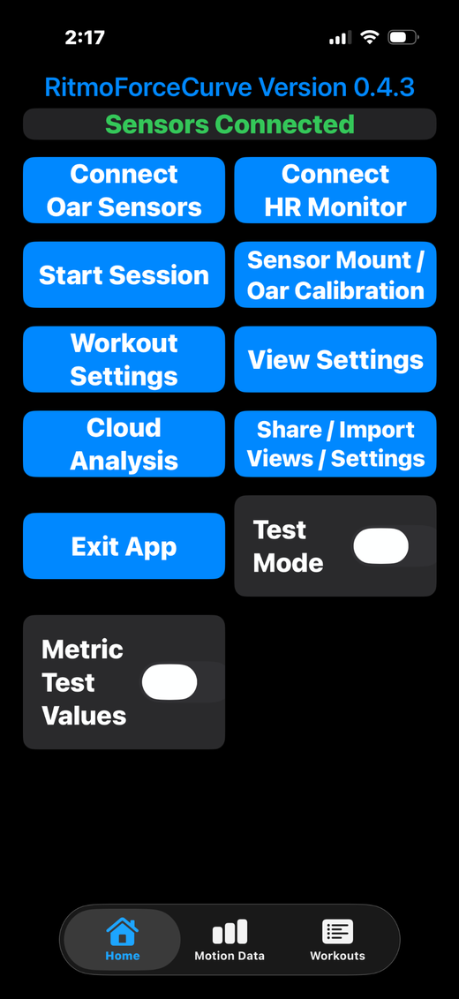

Connecting Oar Sensors
Choose the oar you are using, connect its saved sensors, and confirm the oar name and connection status before starting your session.
Power the sensors and choose your oar
- Turn on the sensors mounted on the oar.
- Open RitmoForceCurve and tap Connect Oar Sensors.
- Use Scan oar label if a label is attached, or choose the correct saved oar. Check its name, side and sensor connection status.
- If this is a new oar, use Setup new oar to create its record.
A saved oar keeps the setup tied to the correct sensor pair. Do not start while an expected sensor is still disconnected.

For a saved oar, use Autoreconnect
- Select the saved oar you intend to use.
- Enable Autoreconnect if you want the app to reconnect to that oar’s saved sensors.
- Allow a few seconds for powered sensors nearby to connect.
- If the app keeps searching, confirm the oar selection and check that another phone or app is not using the sensors.
Older builds call this control Autoconnect. You do not need to choose a new sensor pair for every row.

For a new setup, scan for your sensors
- Use Setup new oar and give the oar a recognizable name.
- Tap Scan to find nearby sensors.
- Select the two sensors mounted on your oar and wait for both to connect.
- Save the sensor selection with the oar as directed by the app.
WitMotion names can look alike. If several pairs appear, move away from other sensors or identify your pair before selecting it. You do not need to infer shaft-versus-sleeve position from the Bluetooth name; follow the setup and alignment workflow.

Keep the pair associated with the oar
- Confirm that both expected sensors are connected to the selected oar.
- Enable Autoreconnect for convenient connection on future sessions.
- Finish the setup and return to the Home screen.
Switch the active oar in Connect Oar Sensors. Review its details and alignment in Oar Settings. Check the selected name before recording.

Resolve an incorrect selection
- Stop and check which saved oar is selected.
- If a sensor has been assigned incorrectly, disable automatic reconnection while correcting the selection.
- Disconnect the incorrect sensor, then scan and select the correct one through the oar setup workflow.
- Save the corrected setup and re-enable Autoreconnect.
Do this away from other active sensors if possible. Closing another app or disconnecting another phone may be necessary before the sensor becomes available.

Check the setup before rowing
- Confirm the correct oar name and all expected sensor connections on the Home screen.
- Open Oar Settings and review Active Oar Details: side, type, dimensions, sensor positions, alignment and active calibration factor.
- If a sensor has moved, repeat motion alignment.
- Secure the iPhone to the boat, check motion/location permissions, choose your live view and tap Start Session.
The updated alignment series has four required movements and optional Square swoop and Squared float. The float reference is saved with the oar and uploaded with the workout. Confirm the active Moment/Bend Factor and dimensions before relying on calibrated loading.

Troubleshooting
Check its power, move the phone closer, and scan again. Power-cycle the missing sensor if needed.
Confirm your saved oar and pair. Set up new sensors away from other active pairs where possible.
Check the selected oar, sensor power and Autoreconnect. Open the connection screen to inspect the saved pair.
Disconnect there or close that app, then scan again in RitmoForceCurve.
Two-oar setups
In Two-oar setup, enable Track two oars, assign a saved record to each oar and tap Connect both oars. Each oar needs two sensors: four in total. Sculling pairs and two sweep rowers are supported; the sweep oars can be on the same or opposite sides. Confirm all four connections before starting. Two-oar display and totals →
Oar settings & calibration iOS sensor alignment Record and upload the workout